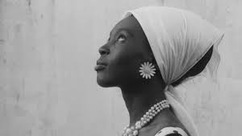

Vestir es un hecho social que opera con referencia a un contexto. Una práctica corporal consensuada sobre la forma en que se representan los cuerpos, los femeninos y los masculinos según la construcción cultural en que se producen.
El aprendizaje de las normas de cada sociedad permite al ser humano interpretar los signos que lo rodean. Pero de la misma manera le permite, mediante el mismo, expresarse como individuo en una colectividad.
En este sentido, la ropa que utilizamos todos los días es una representación de nuestra identidad, que está delimitada por un contexto político, histórico y social. Las prendas que usamos están sujetas a un marco de reglas que operan con base en el rol que desempeñamos, pero también al que aspiramos.
La noire de… es un filme senegalés del director Ousmane Sembène. Fue estrenada en 1966, a pocos años de la conformación de Senegal como un estado soberano. Durante décadas, Dakar fue la capital de las colonias francesas en África y el centro de esclavos más importante para Europa y América.
Esta película cuenta la historia de Diouana, una joven oriunda de un barrio muy pobre de Senegal que trabaja para una familia adinerada. Cuando sus patrones se mudan a Francia, ella decide aceptar la invitación de partir con ellos con la esperanza de alcanzar un mejor estilo de vida. Al estar en su nuevo hogar, la muchacha se da cuenta de que sus tareas son más y su papel ya no es de niñera, sino de sirvienta, condición que la señora de la casa le recuerda constantemente.
El relato se encarga de exponer la constante reconstrucción de la identidad negra frente al colonialismo francés. El vestuario de la protagonista es un signo importante que ayuda a representar esta problemática.
Desde la primera secuencia, Diouana está vestida de manera elegante: vestido ceñido, zapatos de tacón; vistosos aretes y collar, y una peluca. Es cuando recién llega a Francia con la esperanza de mejorar su estilo de vida. La mujer no lleva ropa que la delate como trabajadora del hogar. La representación que ella hace de sí misma revela su aspiración a cambiar su status.
Es importante resaltar que en este momento no lleva ningún elemento significativo de su región de origen. Esto se atañe a la vinculación que se tiene se predominancia entre la cultura francesa sobre la africana. Todo aquello que fuera “afrancesado” es un símbolo de supremacía, mientras que lo africano es observado como algo inferior.

Un importante ejemplo de ello es que Diouana usa peluca. El cabello es uno de los rasgos físicos que delatan con mayor facilidad nuestro origen. El cabello encrespado es una característica que se asocia con la raza negra y la protagonista lo tiene. Solamente al estar en la intimidad es que ella descubre su cabeza y muestra este atributo tan particular; sin embargo, cuando sale lo cubre con una peluca que asemeja cabellos alisados y acomodados según los estándares de belleza de la época y cultura francesa. La muchacha construye su imagen con base en ocultar en lo posible aquello que es considerado proveniente de una cultura inferior para cubrirlo con aquello que es considerado mejor.
La historia toca el tema de lo visible y lo no visible dentro de la trama. Lo visible es aquello que consideran avanzado, moderno, de clase: lo francés. Lo no visible es todo lo que denota origen africano.